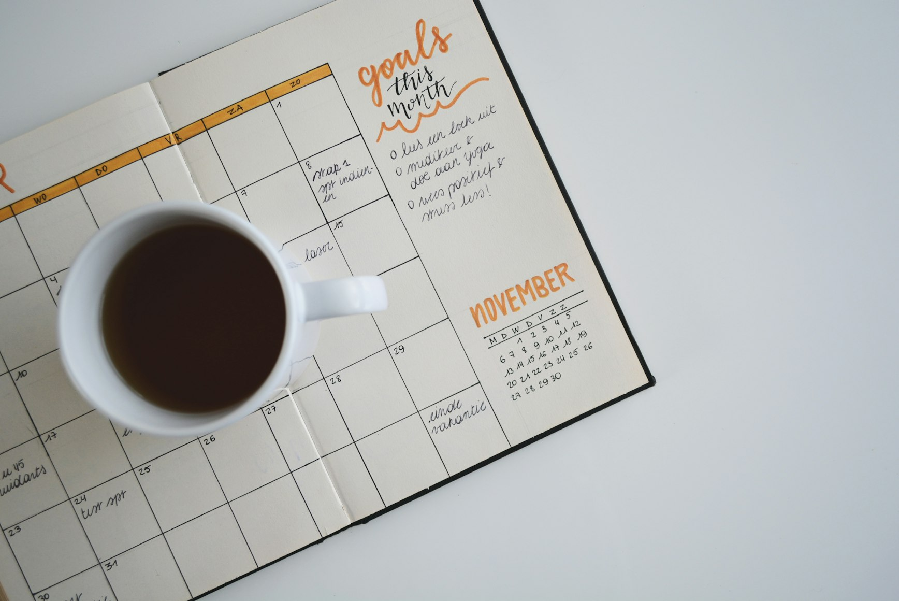
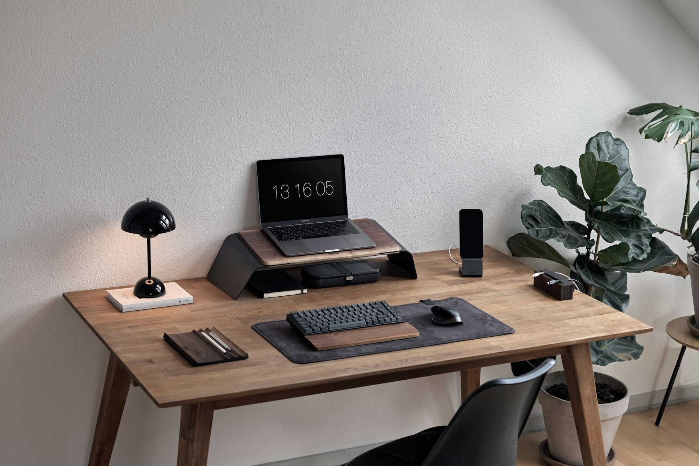
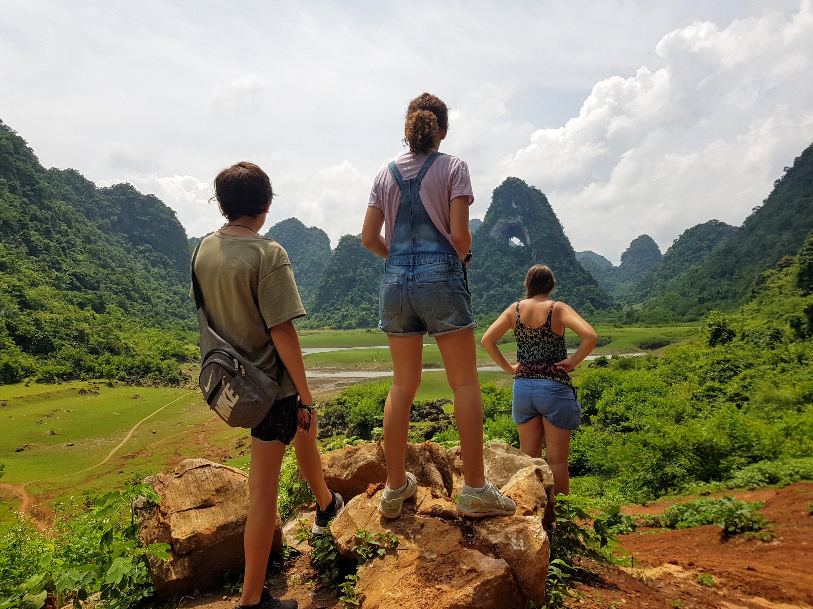

10 Remote Work Strategies for Parents Who Travel
Discover proven remote work strategies for parents who want to travel with their families. Learn how to balance work responsibilities with family adventures while maintaining location independence.
The Dream and Reality of Working While Traveling
Imagine working from a beach cafe in Bali while your kids build sandcastles nearby, or taking client calls from a cozy mountain cabin in Bulgaria as your family explores the surrounding forests. Sounds magical, right?
But if you've tried balancing full-time work with family travel, you know it's not always as picture-perfect as Instagram suggests. After 5+ years of full-time family travel and 4+ years of remote work as a family of six, I've learned that success requires more than just a good WiFi connection and a flexible employer.
In this guide, I'm sharing 10 proven strategies that have actually worked for us—real solutions that have allowed us to maintain professional success while giving our children the world as their classroom.
If you're just getting started, you may also like: Digital Nomad Parents and How to Fund Travel with Remote Work.
This guide is written for families pursuing remote work family travel—practical ways to work from anywhere with kids without sacrificing sleep, relationships, or delivery at work.
The Reality Behind the Dream
Let's start with some honest talk. Many families attempt the work-travel lifestyle only to return home exhausted and discouraged. Why? Often it's a combination of unrealistic expectations, poor planning, and trying to transplant an office routine into a travel lifestyle.
Success doesn't look like working 9-5 and then exploring exotic locations every evening. It looks like intentional time blocking, strategic destination choices, and sometimes trading tourist attractions for stable internet connections. It means accepting that some days are primarily for work, while others are dedicated to family adventures—and finding joy in that balance.
📋 Table of Contents

Remote work and family travel can coexist beautifully with the right strategies and mindset.
Strategy 1: Master the Art of Time Blocking & Boundaries
The secret to making remote work sustainable while traveling isn't about working less. It's about working smarter with intentional time blocks and clear boundaries. Those guardrails must respect both your career and your family's needs.
For a practical framework to compress meetings and protect deep work, read How I Compressed 35 Hours of Work Into 3 Hours.
You can succeed as a travel family with remote full-time work. The issue is the rigid, office‑style 9–5 in a local time zone.
Most traveling families don't struggle because they work "too many" hours. They struggle because they try to copy‑paste an office‑style 9–5 into a life with time zones, transit days, and kids.
Full‑time absolutely works when you shift from "hours in a chair" to outcomes, core collaboration windows, and a predictable travel rhythm.
Early‑start pattern (when sleep is solid)
If your kids sleep through the night and you're rested, start work early—very early—and finish not long after lunch. You'll finish a big chunk while the house sleeps and only manage the waking hours for half your shift.
You'll get to enjoy the sights and feel like you're actually travelling.
Normal‑hours pattern (when nights are broken)
For families with tired parents (I'm one of those), the early‑rise "work before kids wake up" schedule doesn't work. For the last three years, I've raised a little pocket rocket who is super active at night and doesn't sleep through.
I've found living in a hot, tropical climate solves part of the issue. While I still work normal hours (generally 6–8 hours from 8 a.m.) it's ok because the heat in summer is a bit too intense to enjoy outdoors anyway. My husband finds the worldschooling activities that are taking place in air‑con places, and takes the smaller children out for the activities a few days a week.
This gives us the afternoons to enjoy at the beach as the heat cools and the sun goes down.
We find this is a great balance until our youngest decides she will start to sleep through the night and I can return to starting at 5 a.m.
Full‑time friendly alternatives to a local 9–5
- Pick one default schedule and run it for a full week.
- Protect 1–2 deep‑work blocks daily with calendar holds.
- Publish overlap hours so team expectations match your reality.
- Core‑hours + flex blocks: Agree on 3–4 daily overlap hours for meetings if you have these (I'm fortunate to work for a company with very few meetings required, most things can be sorted async); do the rest async. Keeps collaboration tight and gives you deep‑work windows.
- Split‑shift schedule: Early 2–3 hours before kids wake, 2–3 hours during quiet time, 2–3 hours in the evening. Matches family rhythms across time zones.
- Compressed workweek (4×10 or 9/80): Same full‑time hours, fewer meeting days. Use long weekends for moves and recovery. If you can negotiate flexi hours (eg 30-40 hours a week), this helps. I've been grateful to have this flex option the past few years as quite often I will reduce down my hours to enjoy an extra day off per week.
- Time‑zone arbitrage: Base yourself 6–10 hours off your team so mornings/evenings become distraction‑free deep work; overlap during "core hours."
- Anchor‑day cadence: 3 meeting‑heavy "anchor" days (e.g., Tue–Thu), 2 meeting‑light deep‑work days. Travel Fri or Mon. Alternatively, if you find you enjoy doing the touristy things during the weekdays, find out if you can work weekends and take a couple of midweek days. I do this because I prefer to experience sites with fewer people around. And also, it is generally cheaper to book transport and flights midweek.
- Sprint + buffer method: Front‑load deliverables before transit; block a "buffer day" after arrival. Prevents missed deadlines from travel chaos.
- Slowmad stays (4–8 + weeks per stop): Fewer moves = fewer productivity hits. Book family‑friendly stays with a dedicated work room. We've found that staying as long as possible really helps. After five years of travel, we decided to take a main base in Vietnam, since we just love it so much. For us, it works with proximity to family in New Zealand, it's a central location to access other Asian countries and even Europe, and we just love the people and food here. After 2 x laps around the world, we found that everywhere we went made us realize just how much we love Vietnam, and this made it easy for us to take a base here which we can come and rest whenever we like. And we can share our family friendly home with other family travellers when we go away.
- Couples' relay or childcare swap: Alternate coverage blocks so each parent gets two uninterrupted deep‑work chunks daily.
- Meeting‑light agreements: Create team "no‑meeting" windows and publish office hours. Record everything; use pre‑reads to cut live calls. Leverage Loom, quite often you can share what you need to communicate in Loom in a few minutes.
- Outcome‑based alignment: Set weekly KPIs/OKRs and define "done." When results are clear, no one cares if your hours are split.
Example weekly patterns (plug‑and‑play)
- Split‑shift week: Mon–Thu core hours 10a–2p local; deep work 6–8a and 7–9p. Fri light meetings only; travel or admin.
- Compressed 4×10: Mon–Thu 8a–6p with a 2‑hour family block mid‑day; Fri–Sun for moves/adventure.
- Further reading: 30+ Best Remote Job Sites for Digital Nomads in 2025

Best remote work schedule for traveling parents
- Early start, early finish: protect sleep and keep afternoons free for family.
- Split‑shift with a mid‑day family block on high‑energy days.
- 4×10 during focused delivery weeks; use long weekends for moves.
Strategy 2: Choose Accommodations That Work for Everyone
Where you stay can make or break your work-travel experience. The right accommodation isn't just about the view—it's about creating an environment where you can be productive and your family can thrive.
When we first started, we'd hop on overnight trains and say yes to anything "adventurous." Once I moved into a full‑time remote role, comfort stopped being a nice‑to‑have and became non‑negotiable. If I can close a door, jump on a call, and the kids have a cozy corner for books or art, we all win.
Remote work accommodation tips for families
- Prioritize a door you can close, reliable Wi‑Fi (ask for a Speedtest), and a workable desk/chair.
- Map noise sources (construction, nightlife) and ask hosts about daytime quiet.
- Travel slow; test 3–4 nights, then extend once internet/noise pass the vibe check.

Our Workspace Checklist (simple but saves the week)
- A real desk‑height surface and a chair (a corner of the master works great for me)
- Reliable Wi‑Fi (I ask for a Speedtest screenshot; 50–100+ Mbps down, 10+ up)
- 4G/5G backup and the ability to reboot the router
- Good light and a clean backdrop for calls
- Enough outlets plus a small power strip
- Quiet during core hours and a door I can close
Family Amenities That Matter (what keeps us sane)
- Kitchen with basic cookware and a proper fridge
- Laundry (in‑unit or in‑building)
- Outdoor space nearby (balcony, yard, or a playground within 10 minutes)
- Sleep layout that actually works: doors on bedrooms, darker room for the kids
- Kid‑friendly extras are a bonus: a few toys/books, high chair/crib if needed
- Walkable groceries and pharmacy in a safe, quieter neighborhood
Budget vs. Productivity (real talk)
Cheap can be expensive. If bad Wi‑Fi or noise steals 3–5 hours of work, that "deal" wasn't a deal.
We'll happily pay $10–$20/night more for solid internet, a door I can close, and AC/fans. It pays for itself in focus.
How We Book (what we actually do)
- We aim for longer stays. Monthly discounts can be 30–60%, and everyone settles in.
- We often book 3–4 nights first to "test," then extend once Wi‑Fi and noise pass the vibe check.
- We travel off‑season or mid‑week when we can, and avoid weekend check‑ins with kids.
- We scan reviews for "Wi‑Fi," "video call," "quiet," "construction," and map the area to avoid nightlife streets.
- We message hosts with a short checklist (script below) and ask for a desk if it's missing.
What We Tend to Book (that consistently works)
- 3‑bedroom apartments or small family houses in quiet residential areas
- A desk in the primary bedroom + a separate living room for the kids
- Serviced apartments/aparthotels for transit months (reliable internet, laundry, weekly clean)
- For move days: business hotels with late checkout and sturdy desks/Wi‑Fi
What We Pack to Make Any Place Work
- Laptop stand, external mouse/keyboard, noise‑canceling headphones
- Compact power strip + adapters, a small clip‑on light for calls
- A few books/toys, art supplies, and notebooks for quiet time (these go everywhere with us)
Arrival‑Day Routine (10 minutes)
- Run a Speedtest and set up near the router if needed
- Choose the "call room" and set a do‑not‑disturb signal
- Stock snacks and water; set up the kids' quiet‑time basket
- Confirm hotspot backup is good to go
Copy‑paste message we send hosts
"Hi [Name], I work remotely full‑time and take video calls. Could you share a recent Speedtest from inside the apartment? Is the router in the unit (and can it be rebooted if needed)? Is there a desk‑height table and a chair suitable for working a full day? Are the bedrooms quiet during the day (no nearby construction/bars)? We're a family with kids and love longer stays—happy to book [X weeks]- 3 months if these boxes are checked."
Strategy 3: Leverage Time Zone Differences Strategically
Here's a mindset shift that can transform your work-travel life: time zones aren't obstacles—they're opportunities! When you travel with kids and work full-time, time differences can actually become your secret superpower.
The trick is deliberately choosing your overlap hours with colleagues and protecting your sleep schedule so you can fully enjoy those precious afternoons with your family. When you master this strategy, you'll find yourself with blocks of uninterrupted focus time and more flexibility than you ever had at home.
Working While Family Sleeps (simple, calm, productive)
- Early start, early finish: 4:30–11:30 a.m. work block, lunch, then family time.
- Split the morning: 4:30–7:00 deep work; 7:00–8:00 family breakfast; 8:00–11:30 calls/overlap.
- Guardrails that make it work: early dinner (4:30–5:30), wind‑down by 8:00, lights out 8:30–9:00.
Using Time Zones to Your Advantage (pick your overlap)
- US clients while in Europe: start early (4–6 a.m. local) to overlap US mornings; free afternoons.
- US clients while in Asia: choose either early mornings (4–8 a.m.) or short late‑evening overlap blocks.
- EU/UK clients while in Asia: late afternoon/evening overlap; mornings for deep work.
- APAC clients while in Europe: mornings align nicely; afternoons are yours.
Time zone management for remote work with kids
- Define 3–4 core overlap hours and keep the rest async to protect family time.
- Use tools (Clocker, Fantastical, TidyCal) to simplify scheduling across time zones.
- Add buffer days after travel to reset sleep and routines before heavy meetings.
The "Golden Hours" Concept
Your golden hours are the quiet blocks where you do your best work. For many parents: pre‑sunrise.
Examples we love:
- Europe (Turkey, Greece, Spain): 4:30–7:30 a.m. deep work; 9:30–11:30 calls; beach afternoons.
- SE Asia (Bali/Thailand): 5:00–8:00 a.m. deep work; 7:00–10:00 p.m. short US overlap if needed.
- Portugal/Canaries: 5:00–8:00 a.m. deep work; 9:00–12:00 calls; siesta‑style family time.
Tools we actually use (and how)
- Clocker: Menu‑bar world clocks so I can sanity‑check overlap at a glance. I pin client cities and plan calls without doing time‑math.
- Fantastical: Second time‑zone column + "Working Hours" rules. I keep two calendar sets: Core Hours (bookable) and Deep Work (auto‑decline).
- TidyCal: Booking links that detect invitee time zones, add buffers, and cap meetings per day. I use separate links for 15‑min syncs vs 45‑min deep dives.
- Zoom: Recurring links + meeting templates. I test audio once, then reuse. Keeps mornings smooth when I start at 4–5 a.m.
- Loom: Async status updates and pre‑reads. I send "weekly recap" Looms so we can cancel half the live calls.
- UnDistracted: Blocks social and inbox during golden hours. I schedule it to flip on before sunrise.
- Notion board (to‑do): Simple kanban with tags for "TZ overlap," "Golden Hour," and "Async." Daily view = 3 must‑ships max.
- Coda (ownership + raise): One page that tracks shipped work, impact, and weekly wins. Easy to share for accountability—and to make a clean, data‑driven raise request.
Case Study: US clients while we traveled Europe (what actually worked)
My favorite season was working "Asian hours" while we explored Turkey, Greece, and Spain. I started around 4 a.m. and wrapped by midday. Afternoons were for towns and beaches, and honestly, those are some of my best travel memories.
What made it sustainable:
- Sleep first: early dinner (often 4:30–5:30), screens off, in bed by 8:30–9:00.
- Noise control: avoid streets with bars/karaoke; choose a bedroom you can close off from family noise.
- Food plan: in late‑dining countries (hi Spain!), we'd cook early or pack food so I wasn't eating at 9 p.m.
- Home setup: a corner desk in the main bedroom and a simple "do not disturb" cue during calls.
Quick setup checklist (before you commit to a time‑zone plan)
- Is there a quiet, close‑the‑door space for early mornings or late evenings?
- Can you get to bed early (no clubs next door, blackout curtains, white‑noise option)?
- Do you have one 3–4 hour uninterrupted block most days?
- Are your meeting windows clearly published in your calendar tool?
Communication that keeps everyone happy
- Add your local time zone + "office hours" to your email signature and booking link.
- Offer 2–3 recurring overlap windows/week and keep the rest async.
- Send pre‑reads and record calls to reduce "must‑be‑live" meetings during family time.
7‑day experiment (try it next week)
- Days 1–2: 4:30–7:00 deep work, 9:30–11:30 overlap; early dinner, lights out by 9:00.
- Days 3–4: adjust by ±30 minutes to find your best golden hour.
- Day 5: schedule errands/travel after 12:00.
- Day 6: review energy, sleep, and output; adjust overlap windows.
- Day 7: lock the routine and tell clients your stable availability.
Strategy 4: Build Your Remote Work Support System
No parent is an island—especially not a traveling, working parent! Creating a reliable support network is essential for long-term sustainability on the road.
Work + travel stays viable when everyone's needs are met. For us, that means finding our people, establishing backup care options, and maintaining virtual supports that keep our entire family-work ecosystem running smoothly. The right community can transform a challenging day into one filled with shared solutions and laughter.
Work + travel stays sustainable when everyone's needs are met. For us, that means finding our people, having backup care options, and keeping a few virtual supports that make the whole machine run smoother.
Finding Other Digital Nomad Families (how we actually do it)
- Search "worldschoolers + [city/country]" and local expat parents groups; join WhatsApp/Telegram threads for your dates.
- Post a "soft landing" message 2–3 weeks before arrival with kids' ages and interests; suggest one easy meetup (park/cafe).
- Aim for "family hubs" or seasonal pockets where parents gather. Example: in Hoi An, Vietnam, Feb–Oct is lively with family activities, day trips, and meetups (see Hoi An Kids for local ideas).
- If you have teens: plan longer stays (4–8 weeks) and seek places where other teens are staying a while. Consistency matters after 13–14.
Local Support Networks (babysitters, coworking, activities)
- Babysitters: ask in worldschooling/expat groups for personal recommendations, request 2 references, do a 1‑hour paid trial while you're nearby, confirm rate, hours, and emergency plan.
- Coworking with childcare: some spaces offer kids' rooms or partner daycare; otherwise, pair a quiet coworking near a playground so one parent works while the other does an easy outing.
- Activities for sanity: my husband thrives with sports (pickleball, basketball, beach touch rugby); I recharge small and quiet. Build those outlets into the week.
Virtual Support (keeps momentum when you're moving)
- Accountability partner: a 20‑minute weekly call to set goals and review what shipped.
- Community threads: small Discord/Slack groups for quick questions, wins, and travel tips.
- Async first: Loom updates for work and family coordination reduce live call load.
Emergency Backup Plans (when everything goes sideways)
- Childcare: a short list of 2–3 on‑call sitters; pre‑written "can you cover 2 hours today?" message.
- Internet/power: two SIMs/hotspots on different carriers, a nearby cafe or coworking with day pass, and a hotel day‑room option pinned on your map.
- Noise/sleep: white‑noise app, earplugs, a "call room" that can close, and a simple door sign for do‑not‑disturb.
- Communication: pre‑draft a brief "unexpected outage, back at [time]" note you can send in 10 seconds.
About "Hubs" (proceed, but vet thoroughly)
Hubs can work well if both parents are working or you want instant community.
- Do your due diligence: verify business registration, ask about CPR/first‑aid training, staff‑to‑child ratios, safeguarding policies, and incident procedures.
- Red flags: defensive responses to safety questions, pressure tactics, repeated themes in poor reviews, or reluctance to share policies in writing.
- Talk to families privately who've attended; invite honest DMs.
Our Support Story (how we found our people)
2020–2023 was tough—few families were traveling and community was thin. We leaned hard on worldschool groups and slowly found our tribe.
In Hoi An, one family coordinates regular activities—lifesaver for focus and sanity. With teens, we learned to choose places where other teens stay longer; quick pass‑throughs didn't stick.
Over time, the network compounds: a friend knows a friend in your next city, and soon you're planning adventures together.
Copy‑paste scripts
Soft landing post:
"Hi! We're a traveling family arriving in [city] from [dates]. Kids are [ages] and into [interests]. Anyone up for a casual park meetup or beach day next week? Also open to sitter recommendations. Thanks!"
Babysitter vetting:
"Hi [Name], we're looking for a sitter in [neighborhood] for [days/times]. Could you share your rate, experience with [ages], two references, and whether you're first‑aid/CPR trained? We usually do a 1‑hour paid trial first."
Strategy 5: Invest in Technology That Actually Works
The right tech setup is the backbone of successful remote work while traveling. It's not about having the fanciest gear—it's about reliability, redundancy, and tools that keep you productive no matter where you are.
See also: Top 50 AI Tools for 2025 for a broader toolkit you can adapt to your workflow.
If you're working for a good company, they should supply you with, at a minimum a decent laptop. The company I work for goes the extra mile and provides a full set up with top range laptops, adjustable height desk, comfortable chair and monitors. Anything I need, my company will provide. I have this set up in my home base, and in the future, will consider setting up another work friendly set up in a second base.
I always make sure to have mobile data. There have been plenty of times when mobile data has come in handy. EG typhoons and flood = electrical outages in 2020, and it's common anywhere in the world to have a big storm take out electricity. We rely on Roamless internet when we arrive in a new country, and that gives us time to go and find a local sim. We never buy local sims at the airport because you generally don't get the best deals at the airport. We also have charging packs that allow for laptop charging and to keep mobile batteries full to get through one shift. For extended outages in places where electricity is sketchy, I recommend looking for a home with generator. This helped us immensely during our stay in Dominican Republic for two months where electrical outages were full days multiple times per week.
I also travel with a portable monitor. This is a 16 inch screen and fits in my travel laptop bag. It comes everywhere around the world with me.
At work, we communicate via Slack; in life, I communicate mostly with WhatsApp, Signal and Telegram. We also have Facebook Messenger and Instagram for families who might find us those ways.
We use Zoom for meetings and Slack for quick huddles, and Loom for walkthroughs or demos.
Strategy 6: Plan Your Work Around Travel, Not Vice Versa
One of the biggest mindset shifts for successful traveling families is learning to plan your work schedule around your travel, not the other way around. This doesn't mean work takes a backseat—it means being strategic about when and how you work to maximize both productivity and enjoyment.
Pretty gear is nice. Reliable gear pays the bills. We keep it simple: one solid setup at home base, a travel kit that works anywhere, and back‑ups for internet and power so a storm or outage doesn't wreck a workday.
Essential Tech Stack (what actually travels with us)
- Reliable laptop (company‑issued if possible) + 16" portable monitor in my laptop bag
- Noise‑canceling headphones + external mouse/keyboard
- Compact power strip + universal adapter + USB‑C PD power bank (60–100W so it can charge a laptop)
- Small ring light or clip‑on lamp for early calls
- Optional: travel router (GL.iNet‑style) to stabilize flaky Wi‑Fi
Internet Backup Playbook (rule of 3: two networks + one power plan)
- Primary: accommodation Wi‑Fi (ask for a Speedtest screenshot)
- Secondary: eSIM/data (we use Roamless on arrival, then switch to the best local plan)
- Tertiary: a second SIM or partner's hotspot on a different carrier
- Power plan: high‑capacity power bank; in places with sketchy grids, look for homes with a generator. In the Dominican Republic, a generator saved multiple full‑day outages for us.
Offline‑First Defaults (so outages don't stop delivery)
- Sync files for offline in Google Drive/Notion; prep docs the day before
- Keep an "offline work" list (writing, reviews, planning) ready to go
- Zoom fallback: switch to audio‑only, turn off HD, record a Loom afterward if needed
Productivity Tools for Parents (focus by default)
- UnDistracted: blocks social/inbox during golden hours on a schedule
- Notion board: simple kanban with tags for "Golden Hour," "TZ Overlap," "Async"
- Coda page: track shipped work, impact, and weekly wins—great for accountability and clean, data‑driven raise conversations
Communication Tools (fewer meetings, clearer collaboration)
- Slack for quick huddles and status; WhatsApp/Signal/Telegram for family/community
- Zoom for recurring calls; meeting templates so 4–5 a.m. starts go smoothly
- Loom for async updates and walkthroughs—cuts a surprising number of live calls
Internet Shopping + SIM Tips (save money, save stress)
- Don't buy SIMs at airports—prices are rarely the best. Use an eSIM (like Roamless) on arrival, then buy the best local plan in town within 24–48 hours.
- Always check coverage maps for your neighborhood and ask hosts which carrier works best in the building.
Further research and data
- Buffer: State of Remote Work for yearly remote work statistics.
- Nomad List for community‑sourced city data (costs, internet, safety).
Company Gear (make the most of it)
- If your company supplies gear, ask for what keeps you productive: adjustable desk and chair at home base, external monitor(s), and a stipend for a travel monitor or power bank.
- Consider setting up a second base with a simple "plug‑in and go" workstation if you rotate between two places.
What we actually pack (quick list)
- Laptop + 16" portable monitor
- Headphones, mouse/keyboard, power strip, universal adapter
- USB‑C PD power bank, small light
- eSIM, spare SIM, and hotspot‑capable phone
Host message (power + internet)
"Hi [Name], I work full‑time remotely. Could you share a recent Speedtest from inside the unit? Is the router inside (and can it be rebooted)? How often are power cuts in your area, and is there a backup (generator/inverter)? Are there any known construction/noise issues during weekdays?”
Real‑life note from the road
In 2020 storms, mobile data kept me online through outages. In the Dominican Republic, a generator was non‑negotiable: without it we'd have lost full days, multiple times a week.
Budget‑friendly swaps
- Buy refurbished laptops/monitors from reputable sellers
- One good power bank + a compact power strip beats carrying multiple chargers
- Monthly accommodation discounts (30–60%) free up budget for the right gear
Strategy 7: Master Professional Communication While Traveling
- Setting Expectations with Employers/Clients
- The "Travel Transparency" Approach (being honest about your lifestyle)
- Handling Time Zone Challenges Professionally
- Creating Professional Boundaries (when to say no to work)
- Success Stories: Clients who embraced your lifestyle
The biggest reason full‑time remote + family travel works for me? I over‑communicate the right things, at the right times. No surprises. Clear availability. Solid backups.
Setting Expectations with Employers/Teams
- Share a simple "Working From X" note before you move:
- Where you'll be, dates, local time zone, core hours, and meeting windows
- Any known blackouts (travel days, visa appointments)
- Internet/power backups and a phone number for urgent issues
- Publish your office hours in your calendar, email signature, and booking link.
- Keep a living "travel calendar" shared with your team.
The Travel Transparency Approach (be proactive, not apologetic)
- Maintain a one‑pager: current location, time zone, overlap hours, backup plan, and next move date.
- Add a footer to your weekly update: "Currently in [City, TZ]. Overlap hours: [times]."
- Tell your manager People/IT implications up front: Allowed countries, tax/PEO rules, data access restrictions, VPN/MDM requirements.
Handling Time Zones Like a Pro
- Default to async: pre‑reads, Loom walkthroughs, written decisions.
- Offer 2–3 recurring overlap windows per week; keep the rest meeting‑light.
- Use booking links with time‑zone detection and buffers (e.g., TidyCal).
- Set response SLAs: "Same‑day for urgent, 24 hours for normal, end‑of‑week for deep reviews."
Professional Boundaries (how to say no without friction)
- Create "no‑meeting" blocks for golden hours and family time.
- The two‑slot rule: you'll take either the early slot or the late slot this week—not both.
- If a request breaks your sleep window, offer 2 alternatives plus an async option.
Colleague‑backed proof
In my global, remote‑first team, several colleagues rotate regions each year and maintain strong delivery by agreeing on core hours, using async updates, and planning buffer days around moves. My own travel has let me attend nearby industry events and bring back useful insights for the team.
Security and compliance (don't skip this)
- Use company VPN/MDM, private networks only, and avoid public Wi‑Fi for sensitive work.
- Confirm data‑access rules by country and any restricted regions before you book.
Copy‑paste scripts
Manager heads‑up (before a move):
"Hi [Manager], I'll be working from [City, Country] from [dates]. Local time zone is [TZ]. Core overlap hours: [times]. Travel/buffer days: [dates]. Internet: [primary + backup]. Phone/WhatsApp for urgent: [number]. No changes expected to delivery; please flag any concerns or compliance requirements."
Calendar description (recurring overlap block):
"Bookable overlap hours (local time [TZ]). For other times, please use the async doc or Loom pre‑read."
Polite reschedule (time‑zone friendly):
"Thanks for the invite! That time falls outside my sleep window. Could we do [Option A] or [Option B]? Happy to provide a Loom update if that's faster."
Unexpected outage:
"Quick heads‑up: local power/internet outage. I'm switching to backup now and expect to be back by [time]. Will send a Loom update if we need to shift."
Strategy 8: Turn Travel Into Educational Opportunities
- Worldschooling Integration (educational activities during travel)
- Work-Life-Learning Balance
- Educational Resources for Traveling Families
- How Travel Enhances Your Work (creativity, problem-solving, cultural insights)
- Your Kids' Educational Journey (real examples)

One of the greatest benefits of a global work life has been exposing our kids to the world. While we are more unschooly than curriculum based, our children have learned more traveling than they could've ever learned in a classroom.
- They are highly self-aware and have a deep understanding of what it means to be human.
- They seem more mature for their ages (16 and 18) than many school-based peers and look at life through a wise lens.
- They read widely and invest in personal growth and their mental health.
- They understand that "book smart" isn't everything and have a depth of knowledge you can't acquire in one classroom in one town.
My kids understand the diverse nature of the world. They are participating in real life, having conversations with all sorts of different people—conversations you cannot put a price tag on.
I truly believe that worldschooling and global education is the first-class educational system for the current times. While traditional ed struggles to keep up and adapt, a flexible, self-directed learning approach ensures our children are the drivers of their education, and develops a love of learning which will be very important as the world changes more and more rapidly.
Worldschooling Integration (learning woven into the day)
- City "micro‑curriculum": history walk + museum day, local market math, language exchange at a cafe, cooking a regional dish, nature journaling at a park.
- The 3‑3‑1 rhythm: 3 curiosities (questions they want answered), 3 experiences (places/people), 1 output (journal entry, photo essay, short Loom).
- Conversation > worksheets: talk to bakers, drivers, guides, artists, creatives, grandparents at the park. Those conversations are priceless.
Work‑Life‑Learning Balance (so your 40 hours still work)
- Split‑shift day: early parent work block, late‑morning learning outing, quiet‑time reading/journaling, afternoon adventure.
- Learning sprints: pick a theme per city (e.g., "ancient trade routes," "marine ecosystems," "street food economics") and focus for 2–3 weeks.
- Quiet‑hour kit: books, art supplies, notebooks, kindles—kids settle, you get deep‑work time.
Educational Resources We Actually Use
- Core tools: Notion learning log, Google Drive for shared docs, Readwise/Kindle highlights.
- Learning apps: Khan Academy, Duolingo, Libby (library ebooks).
- Community: local museum passes, guided walking tours (our guided tour of Ephesus in Turkey is an absolute highlight), language tutors, worldschool meetups, Outschool classes when we want structure.
How Travel Enhances Your Work (surprising compounding benefits)
- Fresh problem‑solving: new cities force creativity and calm under pressure—great for shipping work.
- Communication superpowers: different cultures = clearer writing, fewer assumptions, better async.
- Industry insight: conferences near you, on‑the‑ground observations, real user behaviors you can bring back to your team.
Our Kids' Educational Journey (real life, real growth)
They read widely, care for their mental health, and see life through a wider lens. They know they'll "fill gaps" when needed—but they're building something deeper: self‑direction, empathy, and confidence in new places with new people.
Simple Templates (copy‑paste and go)
Weekly worldschool plan:
- Theme: [e.g., "Ottoman history"]
- 3 curiosities: [question 1–3]
- Experiences: [museum, market, language cafe]
- Output: [journal, photo essay, Loom recap]
- Reflection: What surprised you? What do you want next?
Learning transcript (for older kids): Subject/Theme | Activities | Skills | Evidence (link/photo) | Date. Map to "credits" if you need to report for homeschool requirements.
Parent portfolio (for future resumes/applications): Projects shipped | Places | Collaborations | Languages/skills | References
Money and mindset
You can redirect tens of thousands each year from private school into a worldschooling lifestyle—swapping tuition for travel, tutors, museum passes, and experiences that build a global network and practical skills. If you want to homeschool and can perpetual travel, you may be able to share with your school that you're permanently leaving your country, then be free to travel. It will depend if you need to maintain a permanent residence in your home country and rules for your particular native country.
Strategy 9: Diversify Your Income Streams
- Why Multiple Income Sources Matter for Traveling Families
- Passive Income Options (digital products, affiliate marketing)
- Freelance vs. Employment (pros and cons for families)
- Building Location-Independent Businesses
- Your Income Stream Strategy (what works for your family)
Although I currently have a full time remote work role, I've spent time over the years building side hustles. A lot of the time I've burned out before being able to make the opportunities work. Now, with the support of AI tools like Cursor and Claude, I feel empowered with agents who get the work done for me, far more efficiently than I could ever hope to achieve on my own.
I started World Travel Ambitions around 2019 with the hope to turn it into a funded travel blog. 2020 hit and with it, my dream of a blog definitely diminished. Our savings were running very low, and travel blogging wasn't profitable at that time.
In 2023, I decided to give Master Resell Rights (MRR) a try. I had some success, but again burned out with the constant churn of posting all the time, while trying to also parent, getting sick, sick daughter and not enough sleep. I founded How to Fund Travel at that time and hired a VA for the initial work. I was paying my VA, but not really making enough to cover the cost. When I let the VA go, I had big plans to work on the SEO and design, but never really found the time to do anything again.
In 2025, my work handed me a tool, Cursor. And I learned about Vibe Marketing and SEO with AI. I felt like I had an opportunity to bring my old dreams to life with a lot less time investment.
Now, I've relaunched How To Fund Travel. I've started a free membership site, Vibe Nomads, and I am again on the journey to creating sustainable online income streams leveraging AI and SEO.
I think this side of things is really important to any family wanting more time freedom.
Income ideas to consider next
- Digital products: niche ebooks, templates, checklists, or mini‑courses for traveling parents. Start with Building an Online Business to Fund Your Travels.
- Affiliate marketing: tools you genuinely use (eSIMs, travel gear, productivity apps, courses); bake links into helpful guides. Learn more in Travel the World on Autopilot: Easy Affiliate Income Streams.
- Services: part‑time consulting, design, SEO/AI setup, or async coaching with fixed "office hours."
- Sponsorships/UGC: brand collaborations tied to travel family life; keep it values‑aligned and disclose clearly.
- Community + subscriptions: paid tiers inside Vibe Nomads (workshops, templates, office hours) once the free tier is thriving.
- Lightweight SaaS/automations: AI‑powered micro‑tools, Notion systems, or GPT agents that solve 1 clear problem.
From Idea to Income: Build Websites and Apps Without Coding
Launch faster with no-code. Learn how to turn your ideas into income by building websites and simple applications—no coding experience required.
Inside the community:
- ✅ Step‑by‑step no‑code website and app walkthroughs
- ✅ Templates, checklists, and starter kits
- ✅ A step-by-step guide to AI workflows to go from concept to launch
Strategy 10: Prioritize Self-Care and Family Connection
- The Burnout Prevention Plan
- Quality Family Time Strategies (not just quantity)
- Self-Care for Traveling Parents (exercise, meditation, hobbies)
- Relationship Maintenance (with partner, kids, extended family)
- Your Self-Care Routine (practical examples)
Remote work + family travel is a marathon. The only way it's fun and sustainable is if everyone's cup gets filled—sleep, movement, community, and simple, reliable rituals.
The Burnout Prevention Plan (our guardrails)
- Sleep first: lights out early on split‑shift weeks; blackout curtains + white noise.
- Movement daily: beach walks, pool laps, yoga mats always out.
- Sun + water: morning sunlight, hydrate before coffee.
- Buffer days: no calls the day after travel; admin/errands only.
- No‑meeting windows: protect golden hours and dinner time.
- 90‑day cadence: 6–8 weeks "slowmad," 1–2 weeks lighter travel.
Quality Family Time (not just "more time")
- Anchor rituals: beach afternoons 2–3x/week, Saturday brunch, Sunday sunset walk.
- Micro‑moments: 10‑minute tea chats, balcony reading, bedtime debrief.
- Tech rules: phones off at meals, one photo rule then pockets.
- Teen strategy: plan longer stays where other teens stick around; book one "their choice" activity weekly.
- One‑on‑one time: weekly date with each kid; rotate.
Self‑Care for Traveling Parents (what we actually do)
- Me: Five Tibetan Rites most mornings, mums' nights monthly, herbal spa/sauna 2x/month, weekly massage when possible, beach + pool days, brunch dates, quiet art/reading with my teen daughter.
- Him: daily sports if possible—pickleball, basketball, beach touch rugby; community keeps his mental health strong.
- Home kit: multiple yoga mats, resistance bands, lacrosse ball, magnesium, Kindle.
Relationship Maintenance
- Weekly planning date: 45 minutes on money, moves, meals, and moments (what will make this week feel good?).
- Daily 10‑minute check‑in: feelings, schedules, help needed.
- Monthly "us" time: simple dinner, no logistics talk after the first 10 minutes.
- Extended family: schedule standing video calls; share a monthly photo/notes album.
Our simple weekly rhythm (copy‑paste)
- Mon–Thu: split‑shift work, beach/pool afternoons, quiet‑time reading.
- Fri: light meetings only, family activity or friend meetup.
- Sat: adventure + long brunch.
- Sun: slow morning, sunset walk, 45‑minute planning date.
24‑Hour Reset (when it all goes sideways)
- Sleep early + hydrate + protein breakfast.
- 30‑minute movement + 15‑minute tidy/reset the space.
- One deep‑work block; defer everything else.
- Family hour outdoors; early dinner; off screens at 8 p.m.
Boundaries you can say out loud
- "We don't book travel on meeting‑heavy days."
- "No calls after dinner; next overlap is tomorrow at [time]."
- "We travel slow: minimum 4 weeks per stop when school/work is full."
Where we choose to stay (to enable this)
- Near a quiet beach/park, walkable cafes, and community sports.
- A door that closes for calls, plus space for yoga mats.
- Neighborhoods with family meetups and teen‑friendly hangouts.
Frequently Asked Questions
How do traveling parents work remotely?
Use time blocking with clear core hours, choose accommodations that support deep work (a door you can close and reliable Wi‑Fi), leverage time zones for quiet focus blocks, travel slow (4–8+ weeks per stop), and keep backups for internet and power. Over‑communicate availability and build a local/virtual support network.
Can you work full-time while traveling with kids?
Yes. Sustainable patterns include split‑shift days (early morning + quiet‑time + evening), compressed weeks (4×10), core‑hours with async work, and couples' relay or childcare swaps. Protect sleep, plan buffer days around travel, and favor slowmad stays.
What's the best schedule for remote work with family travel?
It depends on energy and time zones. Common winners: early start/early finish, split‑shift with a mid‑day family block, or 4×10 with long weekends for moves. Publish office hours, add no‑meeting windows, and keep 1–2 deep‑work blocks daily.
How do you handle time zones with kids?
Pick destinations that give you 3–4 hours of overlap, keep consistent sleep routines, and use tools like Clocker and TidyCal. Add buffer days after travel, schedule errands post‑noon, and use async updates (Loom, pre‑reads) to reduce live calls.
What equipment do you need for remote work while traveling?
Reliable laptop, 16" portable monitor, noise‑canceling headphones, external mouse/keyboard, compact power strip, universal adapter, USB‑C PD power bank (60–100W), eSIM/hotspot backups (two carriers), and optionally a travel router.
Conclusion: Your Journey to Work-Travel Success
If you've wondered how to work remotely while traveling with family, start with a schedule you can sustain, pick work‑friendly homes, and use time zones as a superpower.
Key Takeaways
- Time management is everything: Master time blocking and boundaries to protect both your work productivity and family time
- Your environment matters: Choose accommodations that support both work and family needs, even if it costs a bit more
- Time zones can be your advantage: Use them strategically to create uninterrupted work blocks and maximize family time
- Community is crucial: Build support networks both online and locally to maintain your sanity and find solutions
- Technology should work for you: Invest in reliable gear and backup systems that keep you connected no matter what
- Plan work around travel: Be strategic about when and where you work to maximize both productivity and enjoyment
- Communication is key: Be transparent with employers and set clear expectations about your availability
- Education happens everywhere: Turn travel experiences into learning opportunities for your children
- Diversify your income: Build multiple income streams to create more flexibility and security
- Prioritize self-care: Take care of yourself and your relationships to maintain long-term sustainability
Start Small, Think Big
Remember, you don't need to implement all 10 strategies at once. Start with the ones that resonate most with your current situation—perhaps time blocking (Strategy 1) and accommodation selection (Strategy 2). As you gain confidence and experience, gradually incorporate more strategies into your routine.
The work-travel lifestyle isn't for everyone, but for families who embrace the challenges and opportunities it presents, the rewards can be extraordinary. Your children will grow up with a global perspective, you'll have the flexibility to work from anywhere, and together you'll create memories that last a lifetime.
The goal isn't to have it all figured out from day one. It's to create a life where work supports your family's adventures, and your family's adventures enrich your work. Start where you are, use what you have, and do what you can. The rest will follow.
Ready to take the next step? Whether you're just starting to explore the possibility of remote work while traveling or you're looking to optimize your current setup, remember that every family's journey is unique. Focus on what works for you, be patient with the process, and don't be afraid to ask for help along the way.
Join Vibe Nomads: Practical tips for balancing remote work and family travel, plus a supportive community.
Join Free